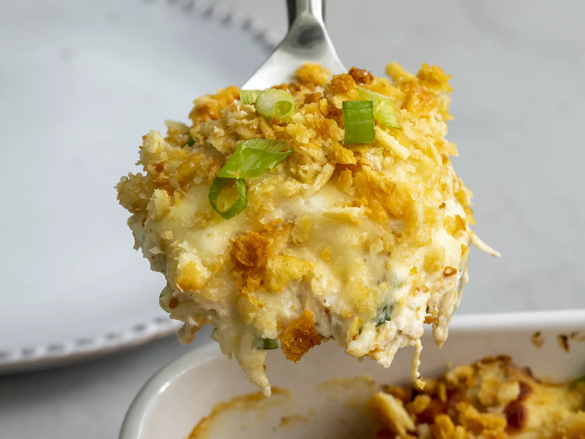

Odin Recipes
Follow these recipes carefully to cook delicious meals!
-
 article
articleLasagna
The bechamel adds a little something special to this wonderful lasagna. I like to use part skim ricotta and mozzarella and low-fat milk to cut some of the fat in this dish. You won't notice the difference.
-
 article
articleGuisado Verde
An easy tomatillo and pork stew that is my girlfriend's favorite. Make it as spicy as you like by adding more or less jalapenos, or do not add any if you have a more tender palate.
-

article
Million Dollar Chicken Casserole
Creamy and incredibly savory, it's a casserole that's hard to stop eating. The cottage cheese is the trick to getting such a creamy, melty texture. Using rotisserie chicken is a must for the recipe and helps keep it quick.